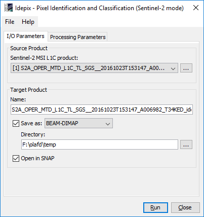

| SNAP Data Processors - Idepix Sentinel-2 MSI Processor Description |
|

Name: Used to select the spectral source product. The source product shall contain spectral bands providing a source spectrum at each pixel. Use the ... button to open a data product currently not opened in the Sentinel Toolbox.
NOTE: The pixel classification for Sentinel-2 MSI will NOT accept the above source products 'as they are' because the source bands have different spatial resolutions. Before applying IdePix, the source products need to resampled to a common resolution using the Resampling processor (Raster --> Geometric Operations --> Resampling). See the help documentation of the Resampling processor for more details.
If the source product has not been properly resampled before applying IdePix, the error message shown below will be displayed.

Name: Used to specify the name of the target product.
Save to: Used to specify whether the target product should be saved to the file system. The combo box presents a list of file formats.
Open in SNAP: Used to specify whether the target product should be opened in the Sentinel Toolbox. When the target product is not saved, it is opened in the Sentinel Toolbox automatically.

Write TOA reflectances to the target product:
If set, all TOA reflectance bands from the source product are written to target product.
The default value is 'true'.
Write feature values to the target product:
If set, various feature values computed for the final pixel classification are written to target product.
See algorthm description for more details. The default value is 'false'.
Compute mountain shadow:
If set, a mountain shadow flag is computed. The default value is 'true'.
Compute cloud shadow:
If set, a cloud shadow flag is computed. The default value is 'false'.
Compute a cloud buffer:
If set, a cloud buffer of certain width is computed around pixels classified as 'cloud sure'.
The default value is 'true'.
Compute a cloud buffer also for cloud ambiguous pixels:
If set, a cloud buffer is also computed around pixels classified as 'cloud ambiguous'.
The default value is 'true'.
Width of cloud buffer (# of pixels):
If a cloud buffer is computed, the buffer width (in # of pixels around the cloudy reference pixel) can be specified.
The default value is '2'.
Digital Elevation Model:
The name of the Digital Elevation Model to be used. The default is 'SRTM 3Sec'.